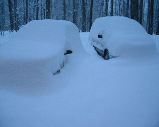
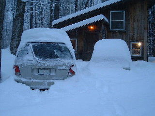
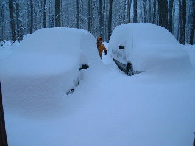
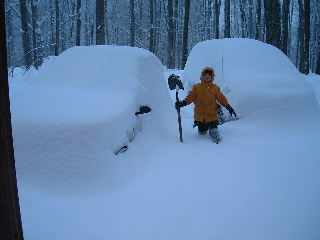
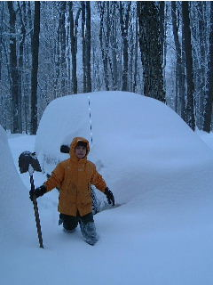
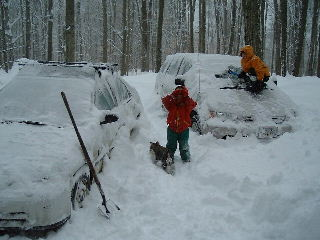
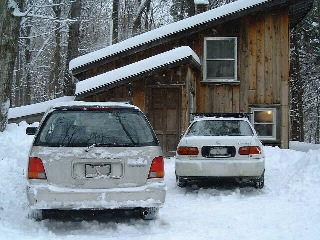
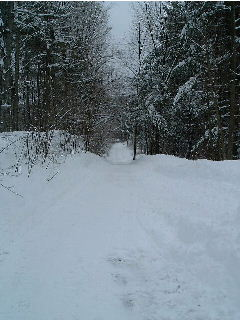

The one on the upper left is 1280x1024 resampled to 320x256. Clicking on it gets you the 1280x1024 reduced by your browser to 640x512. Clicking on that gets you the full 1280x1024 resolution picture. The others are 640x480 snapshots, resampled here to 320x240.
The first five were taken shortly after we went outside. The last one, with Victoria and Skippy, was after half an hour or so of shoveling.






After plowing and much shoveling, all is ready for my trip to the office...

